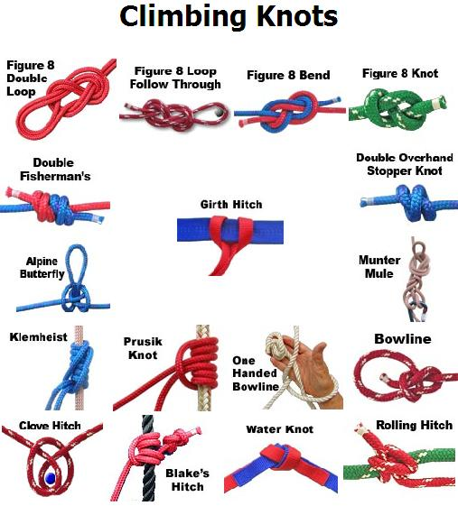
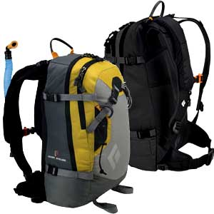

طناب کوهنوردی از ملزومات اساسی این رشته ورزشی میباشد و برای استفاده بهینه از طناب میبایست بتوانیم با ایجاد تغییر شکل مناسب ، آن را برای اتصال به ابزار ، بدن خود یا طناب دیگر آماده و کاربردی نمائیم.برای این منظوراز تعدادی گره مخصوص در کوهنوردی استفاده می شود که هر کدام کاربرد خاص خود را دارد و گاه بسته به شکل ویژه خود هر کدام نام خاصی دارند . بسیاری از گره ها از دیگر رشته های ورزشی مانند قایقرانی ، ماهیگیری و پیش آهنگی و ... اقتباس شده است.
اگر تعریفی از گره بخواهیم بکنیم باید بگوییم درهم پیچاندن قسمتهای مختلف یک طناب و سپس سفت کردن حلقه یا حلقه های ایجاد شده گره نام دارد و در مورد بند۳ باید گفت : گره زدن یک یا دو طناب به همدیگر یا به یک میله یا حلقه و هیچ۴ هم گره ای است که بوسیله آن طناب بطور مستقیم یا غیر مستقیم بدور یک جسم بسته یا پیچانده می شود و اما پلاس که در اصل گره نیست بلکه برای بافتن رشته های طناب برای ایجاد آی۶ و یا اتصال دایمی دو قسمت پاره شده طناب ونمونه هایی از این دست بکار می رود.
هدف از ایجاد گره نگهداری یک یا چند جسم با هم برای جلو گیری از سرخوردن است که سابقه ای بس طولانی در کار دریانوردی و کشتی دارد اگرچه با پیشرفت تکنولوژی در صنعت دریانوردی از اهمیت گره زنی کاسته شده اما هنوز هم میتوان موارد استفاده از انواع گره ها را در عرشه کشتیها دید.گره ها را می توان به سادگی درست کرد البته با تمرین زیاد و تکرار بسیارکه از قدیم گفته اند: «کار نیکو کردن از پرکردن است». نکته مهمی که نباید فراموش کر این است که همه انواع گره ها SWL ۷طناب را بین چهل تا پنجاه درصد کاهش می دهد.
ضمنا همیشه سعی کنیم اسمهای انگلیسی گره ها را یاد بگیریم نه اسامی فارسی شان را.چون اسم استاندارد هر گره را می آموزیم ولی در زبانهای غیر انگلیسی مثلا فارسی از یک عبارت چندین ترجمه صورت می گیرد و نمی توان گفت کدامیک درست است .مثلا برای گره bowline جایی نوشته اند گره حلقوی و جایی دیگر گره کمند و در جایی دیگر به آن گره کمر میگویند در حالی که در همه جای دنیا آنرا به نام بولاین می شناسند.در سایر موارد دریانوردی غیر از گره زنی هم بهتر است با زبان انگلیسی کار کنیم.نکته مهم در گره زنی این است که چه گره ای را در کجا بزنیم. سرعت عمل نیز در گره زنی بی اثر نیست.
هنگام زدن گره ها باید نکات اساسی زیر را رعایت نمود :
همواره گره را دقیق و درست بزنید ، گره زده شده باید تمیز و واضح باشد ، آنقدر در زدن گره تمرین کنید تا ملکه ذهنتان شود ، با چشم بسته و در تاریکی نیز زدن گره را تمرین نمائید ، بعضی از گره ها در شرایطی با یک دست باید زده شود ( مانند گره حمایت و خود حمایت ) برای همین باید از قبل آنها را با یک دست تمرین نمائید، سرعت عمل در گره زدن از عوامل تعیین کننده است.
خواص گره های کوهنوردی:
- در مقابل ضربه و کشش محکم و مقاوم باشد.
- به سادگی زده شود.
- با دست به آسانی باز شود.
- بر اثر فشار بر آن باز نشود.
- بر اثر فشار بر آن محکم تر شود.
- کوچک و کم حجم باشد.
- کمترین شکست را در طناب ایجاد نماید تا مقاومت طناب کم نشود.

بازگشت به بالا

در ميان وسايل کوهنوردي پس از کفش مهمترين وسيله کوله پشتي مي باشد ؛ چون تمام وسايل مورد نياز کوهنورد براي صعود و فرود و شب خوابي در درون آن قرار مي گيرد . کوله ها از زمان قديم تاکنون دستخوش تغييرات فراواني شده اند ؛ بطوريکه امروزه اگر براي اولين بار براي خريد کوله به يک فروشگاه وسايل کوه برويد شايد از ديدن سايزها و رنگها و اشکال مختلف آنها سرتان گيج رود ! بنابراين لازم است با مشورت يک فرد خبره و باتوجه به نيازتان کوله اي مناسب اختيار کنيد تا هميشه و در همه حال بهترين همدم شما باشد چون اگر شکل و اندازه کوله مناسب بدن و برنامه شما نباشد ممکن است بر اثر فشارهاي وارده بر شانه و ستون مهره ها براي هميشه از کوله و کوهنوردي و حتي از زندگي سير شويد .
برخي از کوله هاي قديمي که امروزه نيز گاها استفاده مي شوند داراي يک زين فلزي در خارج از کوله هستند که با پشت فرد در تماس است و چون بار را به تناسب بين شانه و پشت و کفل تقسيم مي کند براي بارکشي هاي سنگين و حتي در موارد اظطراري براي حمل مجروح مناسب است . اشکال اين کوله ها وزن بيشتر و ارتفاع و پهناي زياد است . چون در مسيرهاي تنگ يا داراي شاخه هاي درخت و يا سنگنوردي بايد از کوله هاي باريکي استفاده کرد که عرض آن بيشتر از بدن نباشد . کوله هاي قديمي داراي جيب هايي نيز در پشت و طرفين هستند که مي توانيد وسايل ضروري و دم دست را در آنها قرار دهيد . ولي کوله هاي جديدتر که بيشتر براي برنامه هاي فني و يا زمستاني بکار مي روند بجاي جيب هاي بيروني داراي يک جيب بزرگ در روي سر کوله هستند و بعضا نيز در بخش انتهايي کوله محفظه اي را جداکرده اند که داراي زيپ است و مي توان براي وسايل ضروري و يا کيسه خواب از آن استفاده کرد ؛ در دوطرف و پشت کوله نيز بندهايي براي بستن وسايلي مانند فوم / زير انداز و کلنگ و باتوم و کرامپون و ... تعبيه شده است .
جنس کوله ها معمولا صد درصد ضد آب است که در انواع جديد از پارچه هاي گورتکس که سبکتر نيز هستند استفاده مي شود . رنگ کوله نيز مانند لباسها بايد بشکلي باشد که متضاد با محيط برنامه موردنظر شما باشد تا از دور کاملا به چشم بيايد که اين مسئله در صورت گم شدن و يا مجروح و زمينگير شدن به جستجوگران کمک زيادي مي نمايد . بنابراين کوله ها معمولا به رنگ هاي قرمز و زرد و آبي ساخته مي شوند .
نوعي از کوله ها که به رنگ سبز و يا پلنگي هستند مخصوص شکارچيان و يا سربازان است که مي خواهند در استتار باشند .
اندازه کوله ها را برحسب فضاي داخل آن و با واحد ليتر اندازه گيري مي نمايند که معمولا از ۳۰ تا ۱۰۰ ليتر متفاوت است . کوله هاي ۳۰ ليتري براي برنامه هاي يک روزه بدون وسايل خواب و يا دوچرخه سواري مناسب هستند که البته نوع مخصوص دوچرخه آن داراي بندک نبوده و در آن نيز با يک زيپ بزرگ نيم دايره باز مي شود . هميشه کوله اي را انتخاب کنيد که پس از قرار گرفتن تمام وسايل ديگر فضايي خالي نداشته باشد تا شکيل و خوش فرم به پشتتان بنشيند . اگر کوله بزرگتر باشد از فرم خارج شده و با لنگر انداختن موجب خستگي و آزار شما ميشود و اگر کوچکتر هم باشد که مجبوريد مقدار زيادي از وسايل را به دور کوله آويزان کنيد و يا در دست بگيريد .
نوعي کوله نيز طراحي شده است که مخصوص حمل کودک است و علاوه بر جاي مخصوص نشستن کوک که در حمايت هم باشد و سقوط نکند داراي تعدادي جيب نيز براي وسايل ضروري است ، امروزه کوله هاي مخصوصي نيز براي نوجوانان و بانوان ساخته مي شود که متناسب با فيزيک بدني آنهاست .
بخشي از کوله که با پشت فرد در تماس است شايد مهمترين بخش باشد که بايد مانع از چسبيدن کوله به پشت و عرق کردن شود . کوله ها معمولا بند بزرگي در قسمت پايين دارند که بدور کمر پيچيده مي شود و در حفظ تعادل موثر است . برخي نيز داراي بندکي مشابه و در جلوي سينه هستند که تعادل بالاي کوله را حفظ مي کند ولي موقع صعود که تنفس و حرکت سينه زياد و سريع است بهتر است که بسته نشود و فقط موقع پايين آمدن آنرا ببنديد .
کوله هاي باريک و لوله اي شکلي با جنس ضخيم نيز براي غارنوردي و آبشارنوردي ( دره نوردي ) ساخته شده اند که مناسب مسيرهاي تنگ و خيس و خشن است .
موقع چيدن كوله وسايل سخت و فلزي را در تماس با بدنه كوله قرار ندهيد كه اگر در پشتتان باشد باعث آزار و اگر در اطراف باشد بر اثر كشيده شدن كوله به در و ديوار باعث پارگي كوله مي شود . وسايل را طوري بچينيد كه سنگين تر ها در نزديك پشت و بالاي كوله باشند و همچنين وسايل را به ترتيب استفاده داخل كوله قرار دهيد . در يك كلام كوله چيني خود يك هنر است كه با تمرين در شرايط مختلف روز و شب و هواي سرد و گرم و با دستكش هاي كلفت و ... بدست مي آيد . جاي وسايل را كاملا بخاطر داشته باشيد تا با چشم بسته هم بتوانيد وسيله مورد نظر را بيابيد ! مواد سوختي را در ظروف با در محكم و چند لايه پلاستيك قرار دهيد تا نشت آن باعث خرابي كوله و لباس و غذاها نشود .
توصيه : در خريد کوله و همه وسايل کوهنوردي چون با آسايش و حتي جان شما سروکار دارد به قيمت فکر نکنيد و بيشتر به کيفيت و دوام و راحتي و وزن کم آن بها دهيد ؛ همچنين وسايل خود را تخصصي نماييد و بدنبال کوله اي براي همه برنامه ها و يا کفشي براي همه فصول نباشيد .
کلام آخر هم اين که بقول معروف بايد چند تا کوله را کهنه و يا پاره کنيد تا بتوانيد کوله مناسب خود را پيدا کنيد .
گردآوری: وحید اشرفی
بازگشت به بالا
سفر به مناطق كويري عليرغم اينكه از پرنشاطترين سفرها به شمار ميرود، سفر اسرارانگيزي نيز محسوب شده و در صورت نداشتن آمادگي براي سفر خطراتي را نيز براي گردشگر كوير به همراه دارد. مسافران كوير براي كمتر كردن ريسك سفر بايد چندين نكته را مد نظر قرار دهند.
اين روزها علاقهمندان به سفرهاي كويري رو به افزايش است. پيشنهاد ميشود كه گردشگراني كه تاكنون به اين نقاط سفر نكردهاند براي ديدن كوير و اقامت در آن با تورهاي طبيعتگردي كه گردانندگان آن از تجربه بسياري برخوردارند همراه شوند.
اما اگر قصد سفر به كوير را داريد و ترجيح ميهيد كه در گروه محدود و جدا از تور به كوير سفر كنيد، چندين مورد را بايد در نظر بگيريد.
مواردي که بايد قبل از حرکت رعايت کنيد:
۱. چک ليست تهيه
کنيد
مدتي قبل از سفر چک ليستي از تمامي کارهايي که بايد قبل از سفر به انجام برسانيد و تمامي وسايل و تجهيزاتي که ميبايست به همراه ببريد تهيه کنيد.
تاريخي براي انجام هريک ذکر کنيد تا در ساعات پاياني دچار مشکل نشويد. تمامي مطالبي که در ادامه ميآيد، بسته به نوع سفر و نيازهاي شما ميتواند در قالب چک ليستي که تهيه ميکنيد گنجانده شود.
اگر با چند خودرو سفر ميکنيد، ميتوانيد با سرنشينان ديگر خودرو ها چک ليست خود را مقايسه كرده و نسبت به کفايت آمادگي خود و ديگران براي سفر اطمينان حاصل کنيد.
۲. بيگدار به آب نزنيد
در مورد مسيري که انتخاب کردهايد شرايط فصلي و امکانپذير بودن سفر، با راهنماي خبره مشورت کنيد و به توصيههاي او عمل کنيد.
بدون وي جاده را ترک نکنيد. لزوم بهرهگيري از راهنما و نقشههاي دقيق با بزرگنمايي مناسب براي سفر به كوير ضروري است.
۳. تجهيزات سنگين را فيکس کنيد
تجهيزات سنگين مثل جعبه آچار، جک و ديگر وسايل را در صورتي که درون خودرو و يا روي باربند قرار دارند، محکم کنيد.
براي چنين کاري ميتوانيد از جعبههاي فلزي و مستعمل مهمات استفاده کنيد. کافيست در فضاي زير صندلي و يا محل قرار دادن بار، جعبههاي مهمات را توسط پيچ و مهره به بدنه فيکس کنيد.
حال ميتوانيد از جعبههاي فوق براي حمل تجهيزات سنگين و يا برنده در درون خودرو بهره ببريد. در صورتي که از چنين روشي بهره نميبريد، به هر نحو ممکن از بازي و لق زدن وسايل سنگين درون خودرو جلوگيري کنيد.
در صورت استفاده از باربند، سعي کنيد تجهيزات را کاملا توسط طناب و يا کشهايي که براي بستن بار بر روي موتورسيکلت استفاده ميشود فيکس کنيد.
به اين ترتيب از ميزان صدمه ديدن سرنشينان و تجهيزات در تکانهاي شديد کاسته ميشود.
۴. سلامت خودرو را کنترل کنيد
با وجودي که کنترل کامل خودرو غير عملي است ولي هرگز بدون اطمينان از سلامت بخشهاي زير جاده را ترک نکنيد.
مراقب باشيد شاسي اتومبيل به گل نرود که در آنصورت بيرون آوردن آن بسيار دشوار است.
۵. تجهيزاتي که براي سفرهاي خارج از جاده به همراه ميبريد
هنگامي که فرسنگها از راههاي اصلي، پمپ بنزين و مکانيک دور هستيد و از زمينهايي دشوار عبور مي کنيد، ميبايست تنها روي خود و امکانات خود حساب کنيد. در چنين شرايطي ضرب المثل "هر چه خوار آيد، روزي به کار آيد" صادق است.
شايد سفرهاي زيادي را بدون نياز به تجهيزات زير پشت سر گذاشته باشيد، ولي حادثه رخ ميدهد. برخي از وسايل زير بسته به نوع خودرواختصاصي هستند، ولي برخي ديگر ميتوانند مورد استفاده ديگر وسايل نقليه نيز واقع شوند.
بنابراين حمل تمامي آنها توسط تمام خودروها الزامي نداشته و تنها کافيست که تيم از وسايل زير بهره ببرد.
۶. فهرست لوازمي که براي سفر مورد نياز است
روغن ترمز و کلاچ روغن موتور، روغن گيربکس، روغن کمک و واسکازين ديفرانسيلها و تمامي گريس خورهاي گاردان و فرمان را کنترل و درصورت لزوم روانکاري کنيد. در زمستان از دارا بودن ضديخ اطمينان حاصل کنيد.
نکته، رينگهاي آلومينيومي براي سفرهاي خارج از جاده، مناسب نيستند و احتمال شکستن آنها وجود دارد، رينگهاي فابريک خودرو در چنين سفرهايي بهترين انتخاب است. همچنين لاستيکهايي که داراي گلهاي جهتدار هستند و براي سرعتهاي بالا طراحي شدهاند، براي خارج از جاده مناسب نبوده و علاوه بر اينکه به سرعت صدمه ميبينند از کارايي مطلوبي برخوردار نيستند.
مواردي که بايد به هنگام رانندگي رعايت کنيد:
۱. چهار چرخ
سفر خارج از جاده با خودرو سواري و يا تک ديفرانسيل اشتباه است. از سوي ديگر دو ديفرانسيل هم معجزه نمي کند. همواره به قابليتهاي خود و خودرو خود آگاه باشيد و از ماجراجويي و ريسک محاسبه نشده، بپرهيزيد.
با اين حال به كساني كه تجربه كمتري از سفر به كوير دارند پيشنهاد ميشود اگر نميخواهند با تور به مسافرت بروند حداقل گروهي به كوير مسافرت كنند.
۲. گروهي سفر
کنيد
وسوسه سفر با يک خودرو را از سر بيرون کنيد. اگر موفق نشديد، بيش از هميشه احتياط کنيد. همواره کارهاي تيمي موفقيت بيشتري در بردارد.
۳. چيدمان خودردوها
در صورتي که گروهي سفر ميکنيد، تمامي افراد گروه بخصوص رانندگان بايد از روحيه همراهي و همکاري تيمي برخوردار باشند. تکروي و سرکشي همواره حادثه ساز است. اولين و آخرين خودرو ميبايست همواره مشخص بوده و ديگران نبايد بدون همانگي از اولين يا آخرين خودرو عبور کند.
خودرويي که در پيشاپيش حرکت ميکند بايد با همراهي راهنما يا فردي محلي که با ناحيه آشنايي دارد، حرکت کند.
خودروهاي ديگر به دنبال خودرو اول و حتيالمکان دقيقا از روي مسير خودرو جلويي، به حرکت ادامه ميدهند. حرکت خودروها در کنار يکديگر ميتواند حادثه ساز باشد. آخرين خودرو از وضعيت خودروهاي جلو گزارش ميدهد.
در صورت توقف هر يک از خودرو ها، کاروان متوقف ميشود. هر راننده بايد از تعداد سرنشينان خود آگاهي داشته باشد، و همواره قبل از حرکت، از حضور همه سرنشينان اطمينان حاصل کند.
۴. امنترين و آسانترين مسير را انتخاب کنيد
با انتخاب مسيرهاي امن و آسان خود را با کمترين هزينه به مقصد برسانيد. چه بسا مسيرهاي مشکل شما را از رسيدن به هدف بازداشته و يا با مشکلات جدي مواجه کنند. اين موضوع که براي رانندگي خارج از جاده اقدام کردهايد دليلي براي خودکشي نيست.
براي سلامت خود و همراهان خود، و وسيله نقليه احترام قائل باشيد و از ماجراجويي بپرهيزيد، قبل از انتخاب مسير به عملي بودن، و قابل بازگشت بودن آن فکر کنيد. حتي الامکان از جاده ها براي طي مسير استفاده کنيد. همواره کوره راه بهتر از بيراهه است.
در صورتي که ناچار به خروج از راه هستيد، نسبت به کيفيت زمين از نظر رطوبت، سنگلاخ يا ماسهاي يودن و شيب و عوارض آن تحقيق کنيد.
گاه لايهاي نازک و خشک بر روي خاک تشکيل ميشود که براي پياده کاملا استوار و قابل اعتماد بنظر ميرسد، ولي هنگام عبور خودرو لايه خشک شکسته و خودرو در گل و يا ماسه گرفتار ميشود.
در کشور ما بسياري مسيرهاي خارج از جاده پوشيده از گدازههاي آتشفشاني است. در اين نواحي سنگهايي تيره رنگ با لبههاي تيز مشاهده ميشود.
عبور از چنين مسيرهايي احتمال پنچري را افزايش ميدهد.
۵. آرام و بدون شتابزدگي رانندگي کنيد
شرايط حاکم بر زمينهاي غير هموار خارج از جاده، با جادههاي خاکي، بزرگراهها و پيستهاي اتوموبيلراني متفاوت است.
رانندگي با سرعت بالا در بهترين شرايط موجب محروم شدن شما و سرنشينان از مشاهده طبيعت ميشود. رانندگي سريع ممکن است به آسيب ديدن سرنشينان در اثر تکانهاي خودرو و يا شکستگي قطعات خودرو منجر شود.
همچنين سرعت در راههاي خاکي و يا خارج از جاده، احتمال واژگوني خودرو را افزايش ميدهد.
۶. رعايت فاصله با خودر جلويي
همواره فاصله خود با خودرو جلويي را کنترل کنيد.
ترمز ناگهاني در جادههاي خاکي موجب لغزش خودرو ميشود.
همچنين ترمز ناگهاني در نواحي ماسهاي و گلي منجر به فرو رفتن چرخهاي جلو در خاک نرم، ماسه و يا گل خواهد شد.در چنين شرايطي راه اندازي مجدد خودرو با مشکلاتي همراه است. در اين شرايط حرکت آهسته در مسير قبلي رو به عقب کار ساز است.
۷. عبور آرام از برآمدگيها و چالهها
با عبور آرام از چالهها و برآمدگيهاي زمين ميتوانيد از فشار غير متعارفي که به سيستم تعليق و جلوبندي و شاسي وارد ميشود بکاهيد. خودروهاي شاسي بلند و دوديفرانسيل عموما از شاسي مستحکمتر و قطعات قوي تري بهره ميبرند، استحکام بيشتر منجر به افزايش وزن قطعات خودرو ميشود.
وزن زياد قطعات، اينرسي آنها را افزايش ميدهد. هنگامي که با سرعت زياد عرض جويبارها و چالهها را مي پيمائيد، در حال ضربهزدن به سيستم تعليق و فرمان، و شاسي خودرو هستيد.
از چالههاي آبگرفته عبور نکنيد و براي عبور از نهرها نيز، محلهايي که بستر سنگي است، انتخاب کنبد. در نواحي مرطوب از خط القعر دوري کنيد.
۸. کمربند ايمني را ببنديد
کمربند ايمني با محکم نگه داشتن سرنشينان بر روي صندلي، از برخورد آنها با سقف يا ستونهاي اتاق، هنگام عبور ازعوارض زمين جلوگيري ميکند. چسبيدن به صندلي تسلط شما بر وسيله نقليه را افزايش ميدهد. پوسته خشک روي زمين فريب دهنده است، چرا که خاک زير آن سست و متزلزل است.
۹. مراقب بوتهها و درختان باشيد
به اتوموبيل خود بياموزيد که براي زندگي احترام قائل باشد و به هيچ وجه از روي بوتهها عبور نکند، بوتهها مامن پرندگان، و برخي جانوران بياباني است. نابود کردن موجوداتي که براي ادامه حيات در کوير، مبارزه ميکنند، در زير چرخهاي خودرو و يا بدست من و شما، بسيار غمانگيز و توجيه ناپذير است. به طبيعتي که پذيراي شماست، احترام بگذاريد.
۱۰. بالا و پائين رفتن از تپهها
مرکز ثقل خودردوهاي شاسي بلند، از خودروهاي سواري بالاتر است. همچنين بر خلاف تصور عامه با افزايش وزن خودرو، گرانيگاه خودرو شاسي بلند، بيشتر از زمين فاصله ميگيرد. اين امر موجب ميشود، واژگوني خودروهاي شاسي بلند، بسيار ساده تر از سواري رخ دهد.
براي بالا رفتن از شيبهاي تند، هرگز شيب از بصورت مايل بالا نرويد. بلکه کاملا مستقيم از شيب بالا رويد. در صورتي که خودرو شما قادر به بالا رفتن از شيب نبود، از پيمودن مسير خودداري کنيد. حرکت بصورت مايل منجر به واژگون شدن وسيله نقليه ميشود.
همچنين هرگز بر روي شيبهاي تند اقدام به دور زدن نكنيد، بلکه شيب را با دنده عقب به پائين بازگرديد. در اين شرايط خودرو را خلاص نکنيد. هرگز از تپه يا شيبي که از آن سوي آن خبر نداريد، سرازير نشويد. هنگام پائين آمدن از شيب، خودرو را در دنده سنگين قرار داده و طي مسيري مستقيم از شيب پائين بياييد. براي اطلاعات بيشتر در اينترنت به جستجو بپردازيد.
به خاطر سپردن مسير و نشانهگذاري راه تکيه بر ادوات الکترونيکي مسير يابي کافي نيست. ميبايست نشانههايي را جهت بازگشت به خاطر بسپاريد. از سوي ديگر با توجه به طبيعت متغير کوير، تکيه بر ردپا و اثر چرخها براي طي مسير بازگشت، چندان قابل اطمينان نيست. بنابراين از نشانه ها و عوارض زمين مانند کوهها، تپهها و يا درختان جهت نشان کردن مسير بازگشت استفاده کنيد. همچنين محل خروج خود از جاده و مسير خود را قبلا به محيطبانان و يا افراد محلي اعلام کنيد تا در صورتي که بازنگشتيد، محدوده معيني را به جستجو بپردازند و طي زمان کوتاهتري شما را بيابند.
۱۱. چيزي به جاي نگذاريد
به هيج عنوان زبالههاي خود را در صحرا رها و يا دفن نکنيد. از ريختن روغن موتور بر روي زمين جدا خودداري کنيد. هرچه باخود برده ايد بازگردانيد. گويي آنجا نبودهايد.
خبرگزاري ميراث فرهنگي ـ گردشگري، مريم كريمپور - ۸۵/۱۱/۱۱
بازگشت به بالا